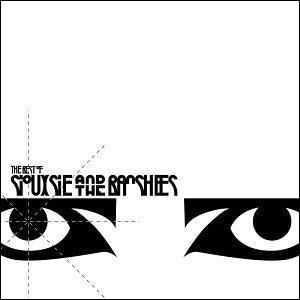

<!DOCTYPE html>
<html>
    <head>
        <title>Goth/Rock Bands</title>
        <meta name="viewport" content="width=device-width, initial-scale=1.0, maximum-scale=1">
    </head>
</html>
<body>
    <header>
        <h1>Bandas do Estilo Gótico/Rock</h1>
        <h3>Serão apresentadas algumas bandas de Rock e Darkwave/Góticas mais ouvidas e traduções de uma música de cada. São músicas aleatórias, portanto, que a autora dessa página sempre gostou.</h3>
    </header>
    <section>
    <div class="band1">
        <h3>Rammstein</h3> <!--Nome da Banda-->
         <!--Foto dos integrantes da banda-->
        <h4>Music: Sonne, from album Made in Germany, by Rammstein</h4> <!--Nome da música + respectivo álbum + artista --> 
         <!--Foto do álbum-->
    </div>
    <div class="band2"> <!--criar sessão toda vez que mostrar uma banda-->
        <h3>Black Sabbath</h3> <!--Nome da Banda-->
         <!--Foto dos integrantes da banda-->
        <h4>Music: God is Dead?, from album 13, by Black Sabbath</h4> <!--Nome da música + respectivo álbum + artista --> 
         <!--Foto do álbum-->
    </div>
    <div class="band3"> <!--criar sessão toda vez que mostrar uma banda-->
        <h3>Sisters of Mercy</h3> <!--Nome da Banda-->
         <!--Foto dos integrantes da banda-->
        <h4>Music: Black Planet, from album First and Last and Always, by Sisters of Mercy</h4> <!--Nome da música + respectivo álbum + artista --> 
         <!--Foto do álbum-->
    </div>
    <div class="band4"> <!--criar sessão toda vez que mostrar uma banda-->
        <h3>Siouxise and the Banshees</h3> <!--Nome da Banda-->
         <!--Foto dos integrantes da banda-->
        <h4>Music: Kiss Then For Me, from album The Best Of, by Siouxsie and the Banshees</h4> <!--Nome da música + respectivo álbum + artista --> 
         <!--Foto do álbum-->
    </div>
    <footer>
        Créditos da autora do site: Amanda, aluna no curso de Ciência da Computação na UNESC. Para ver esse site na versão melhorada, basta clicar nesse <a href="./newpage/newpage.html">link</a>.
    </footer>
</body>
</html>